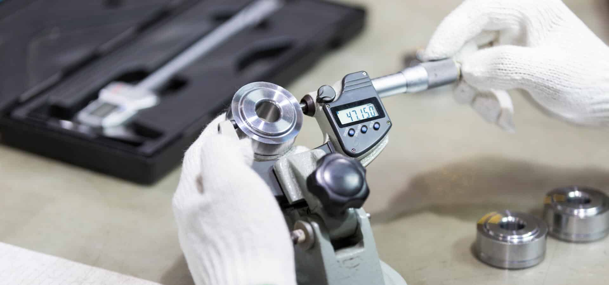
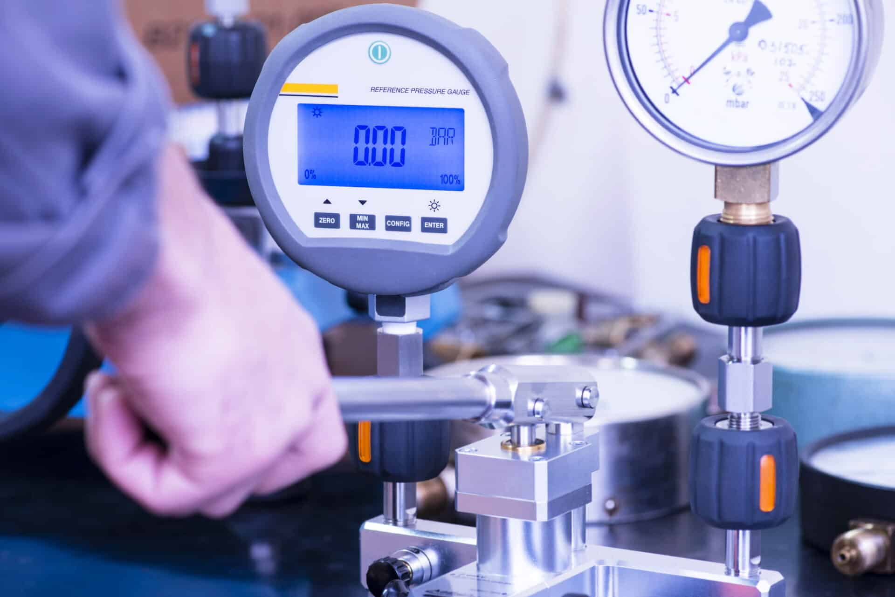
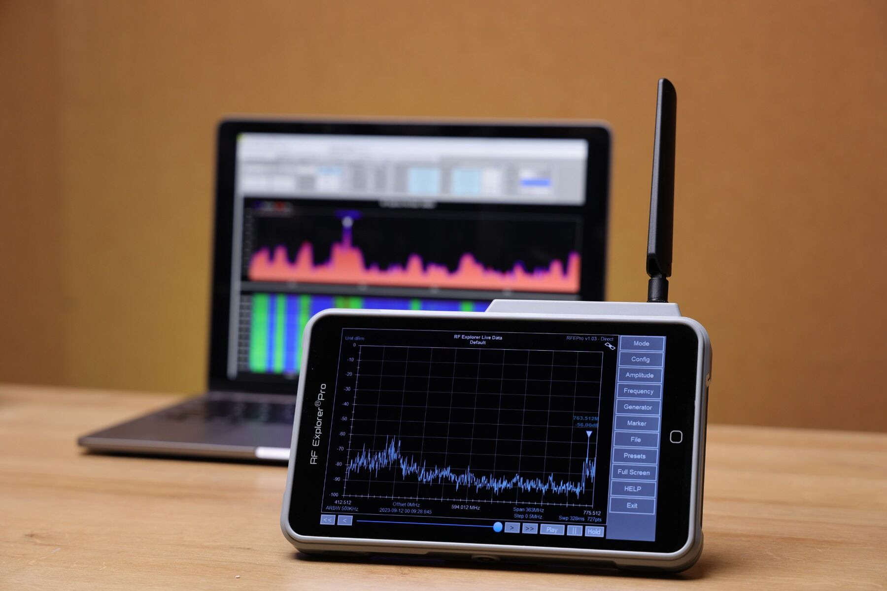
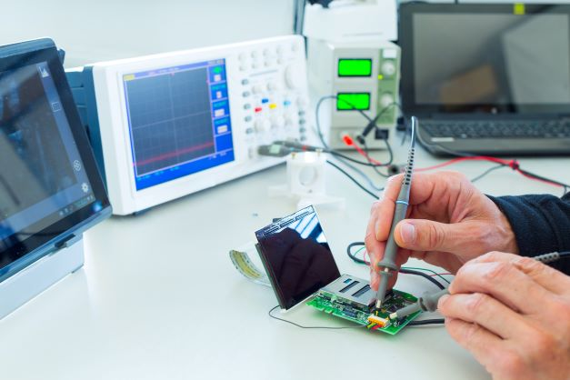

High Precision Primary Calibration (Echelon Level II)
GVS has taken up Calibration activity to our varied clients. We get the equipments calibrated from NABL-Accredited Laboratory, which sets high standards in Calibration.
Electro-technical
Echelon level II is a set of high precision standards instrument used for calibration of standard instrument like Multifunction Electro-technical Calibrators, Pressure Calibrator, Temp Calibrator which is used to calibrate working level measuring instruments.
Pressure Calibration – Cross Float Systems
The Cross float system is designed to mount a variety of piston-cylinder sizes, allow pressure to be applied under the piston and allow masses to be loaded on top of the piston. There are different models depending upon whether the pressure medium is oil or gas and whether a vacuum reference is needed. The measurement uncertainty in the pressure defined by the piston gauge depends on the uncertainty in the effective area of the piston-cylinder and the force applied by the mass accelerated by gravity.
To determine the effective area of the piston-cylinder and the force applied by the masses under actual operating conditions, a number of influences on these values must be quantified and taken into consideration.

Radio Frequency Calibration
Radio frequency (RF) is a rate of oscillation in the range of about 1 kHz to 300 GHz which corresponds to the frequency of radio waves, and the alternating currents which carry radio signals.
Although radio frequency is a rate of oscillation, the term "radio frequency" or its abbreviation "RF" are also used as a synonym for radio – i.e. to describe the use of wireless communication, as opposed to communication via electric wires.
Many industries benefit from precision frequency signals. Typical applications include aligning carrier-wave frequencies to a small tolerance in broadcast transmitters and other wireless communications, laboratory metrology standards for calibrating frequency generating devices, and traditional telecom network.

Bio Medical Calibration
Biomedical engineering (BME) is the application of engineering principles and design concepts to medicine and biology for healthcare purposes (e.g. diagnostic or therapeutic). This field seeks to close the gap between engineering and medicine: It combines the design and problem solving skills of engineering with medical and biological sciences to advance healthcare treatment, including diagnosis, monitoring, and therapy.

Why Calibration of Bio-medical instruments?
The medical equipment/instrument used in hospitals for monitoring and treatment of patients also requires calibration in order to have confidence in their functioning and operation. Calibration is a way of verifying the accuracy of the machines to a known standard. This can help to minimise misdiagnosis by identifying poorly calibrated or malfunctioning equipment. Calibration of Bio-medical will provide you with peace of mind; knowing all of your equipment is 100% accurate and is working as well as it did on the day it was purchased.